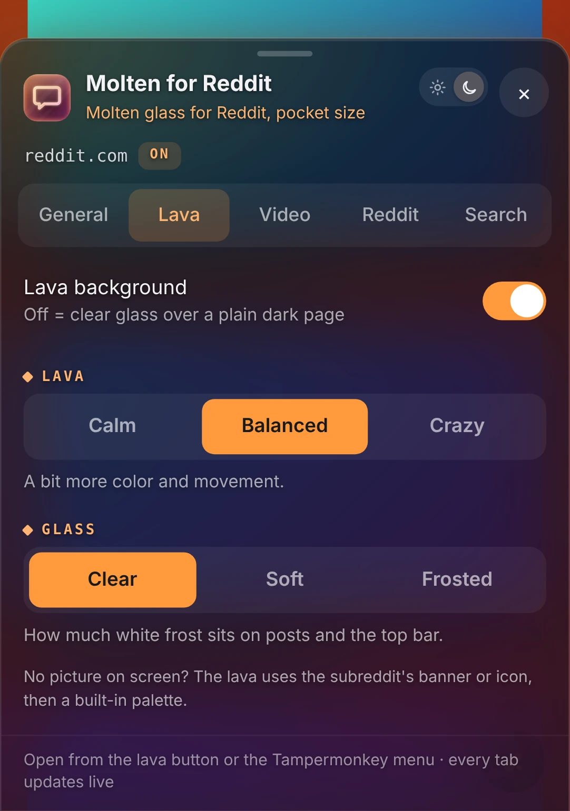
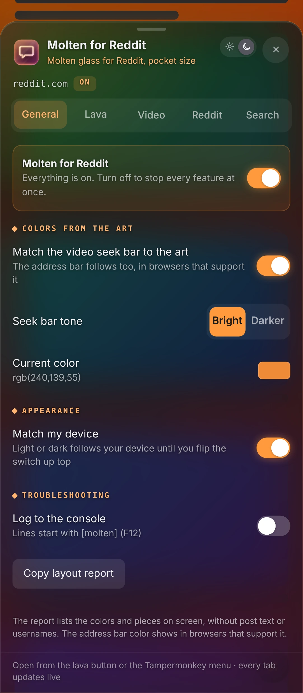
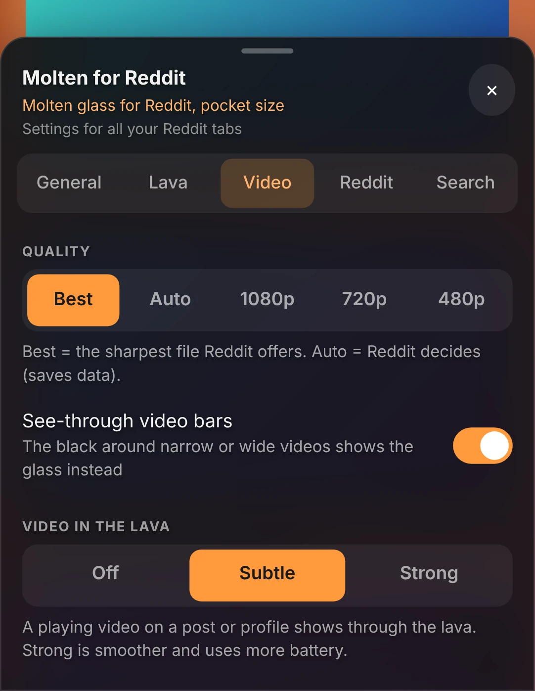
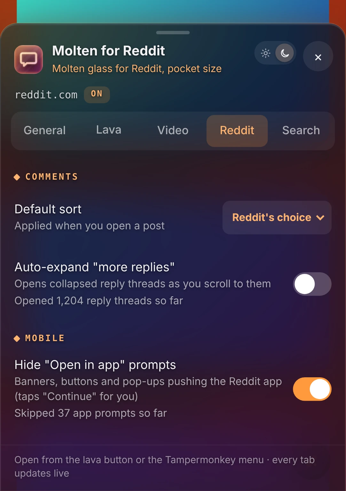
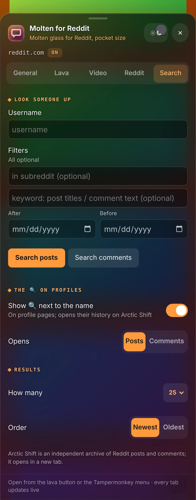

Mobile userscript
Molten for Reddit Mobile
Molten glass for Reddit, pocket size.
This is the phone version of Molten for Reddit: a gentle lava background from the post you are looking at, clear-glass posts and comments, with simpler controls made for touch.
reddit.com on your phonev1.2.2

Features
Gentle lava
Calm, Balanced or Crazy, made from the post you're looking at.
Glass to taste
Clear, Soft or Frosted posts and top bar.
Colors from the art
The seek bar and even the address bar follow the post, where the browser supports it.
Pick your quality
Best, Auto, 1080p, 720p or 480p, with video shining through the lava.
No "Open in app"
App banners and pop-ups disappear, and "Continue" gets tapped for you.
All the good parts
Comment sort, auto-expanding replies and Arctic Shift lookup.
A closer look




More for your phone